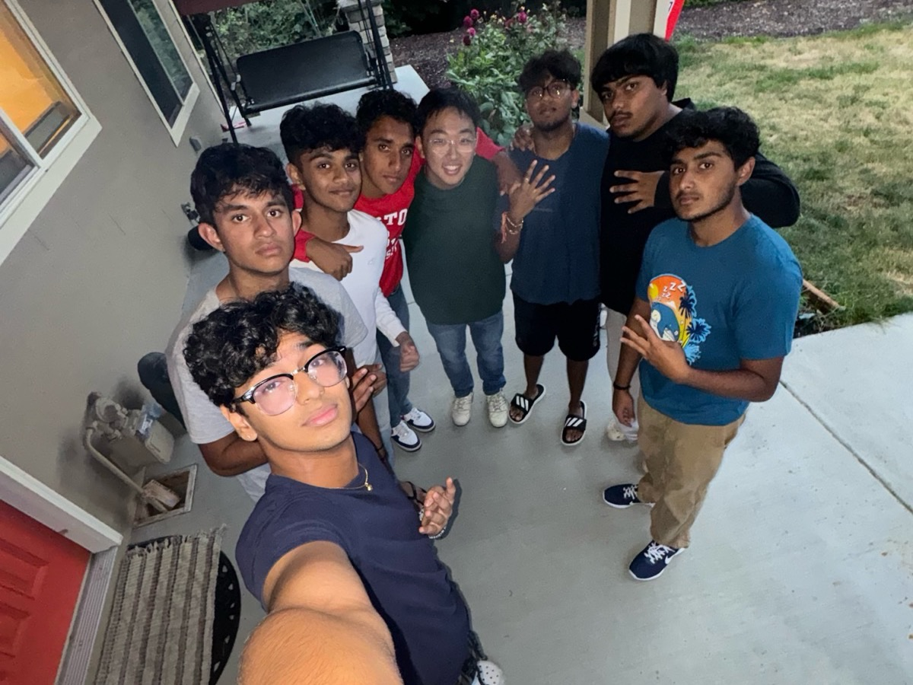

I currently run Laplace Research, an AI lab focused on tackling forecasting.
I'm deeply interested in crypto and decentralized finance. Since the release of ChatGPT, which I see as the start of the singularity, I've become increasingly convinced that AI will fundamentally reshape how financial institutions operate. I'm exploring how to make this transition safer through my work at Touchstone and Stanford's AFT Lab.
After high school, I spent two years at De Anza College studying Math and Economics, and will spend the next two doing the same at UC San Diego. Along the way, I worked at Esplanade Capital, Alexandria, and founded Monolith Investments LP, an AGI-themed quant fund.
In my free time, I love to play badminton, pickleball, and anything that involves both a racket and my friends.
